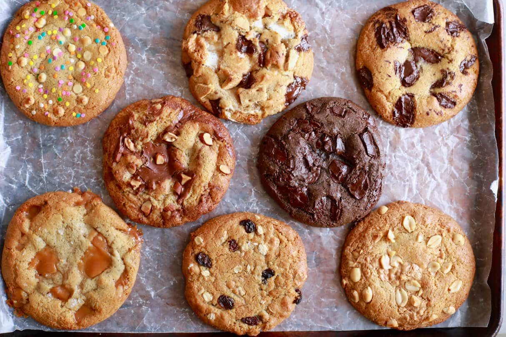

Cookie Recipe

Crazy Cookies Yo
This cookies are wack yo. Real deal. Get these bad boys in yo tummy
asap brother.
Meep Meep Meep Meep yummy!
Ingredients
- 1 cup (8oz/225g) butter ( melted and cooled to room temperature)
- 1 and 1/4 cup (7 1/2 oz/213g) dark brown sugar
- 3/4 cup (6oz/170g) white sugar
- 2 large eggs
- 2 teaspoons vanilla extract
- 2 and 1/2 cups (12 1/2oz/355g) all-purpose flour
- 1 teaspoon baking soda
- 1 teaspoon salt
- 1 generous tablespoon dark chocolate (rough chopped)
Cooking Instructions
- In a large bowl add in the melted butter, both sugars, eggs, and
vanilla extract and whisk together until combined.
- In a separate bowl, mix together the flour, baking soda, and salt.
- Add the dry ingredients to the wet and stir with a spatula to form
your cookie dough. IMPORTANT STEP: Now, chill the dough for a
minimum of 2 hours before scooping to avoid the cookies from
spreading while baking.
- Using a 1/4 cup measure, scoop the cookie dough base into roughly
14 cookies (weighing roughly 2 1/2 oz each)
- Press your chocolate chunks into your base cookie and fold the
cookie dough over itself to make sure the chocolate chunks are
distributed throughout
- Bake cookies in oven at 350 for 12 minutes